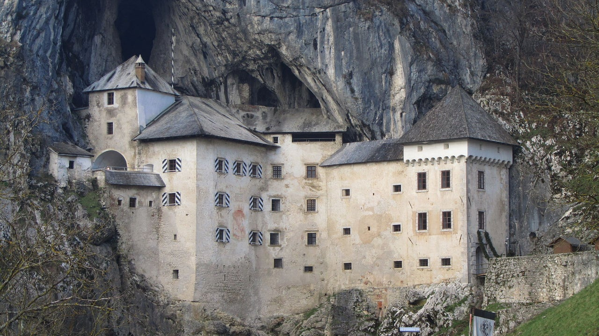
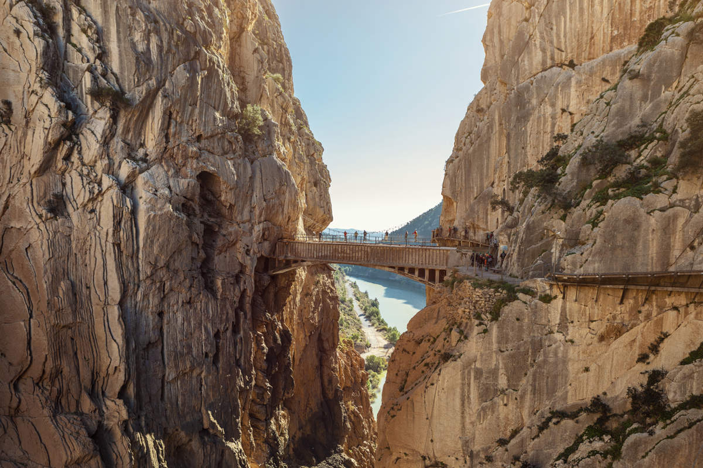
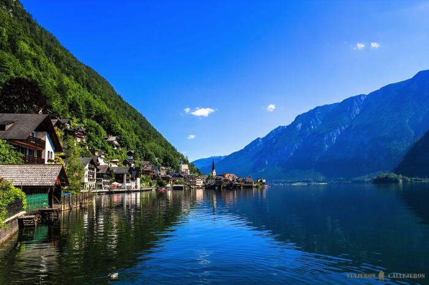

Castillo de Predjama
Eslovenia: El castillo fortificado más grande del mundo construido dentro de la boca de una cueva. Un refugio inexpugnable con túneles secretos.
Su curioso nombre tiene un bonito significado. Y es que, en esloveno, jama significa “cueva”. Por lo tanto, se refiere a “castillo en una cueva”. Para poder llegar
a este lugar, debemos tener en cuenta que esta edificación se encuentra, aproximadamente, a unos 9 kilómetros de Postojna, ciudad eslovena.

Caminito del Rey
España: Una pasarela colgada en las paredes verticales del Desfiladero de los Gaitanes. Una experiencia de vértigo en un entorno natural único.
La ruta de el Caminito del Rey discurre por el Paraje Natural Desfiladero de los Gaitanes, un espacio natural protegido. El camino discurre entre dos desfiladeros,
tres cañones y un gran valle, en parte por senderos y en parte por pasarelas, a lo largo de 3 kilómetros. El recorrido es lineal, no circular, de sentido único y descendente.
El primer tramo es el Desfiladero de Gaitanejo, el segundo comprende el cañón donde se sitúa el Tajo de las Palomas, tras el cual se recorrerá el Valle del Hoyo para,
seguidamente, entrar al último cañón, donde se recorre el Desfiladero de los Gaitanes antes de entrar al último tramo de pasarela y finalizar el camino.

Hallstatt
Austria: Considerado el pueblo más bonito a orillas de un lago. Es tan perfecto que existe una réplica exacta construida en China.
La localidad da su nombre a la cultura de la edad de Hierro denominada Cultura de Hallstatt. En 1997, el paisaje cultural de Hallstatt-Dachstein fue
declarado Patrimonio de la Humanidad por la Unesco.